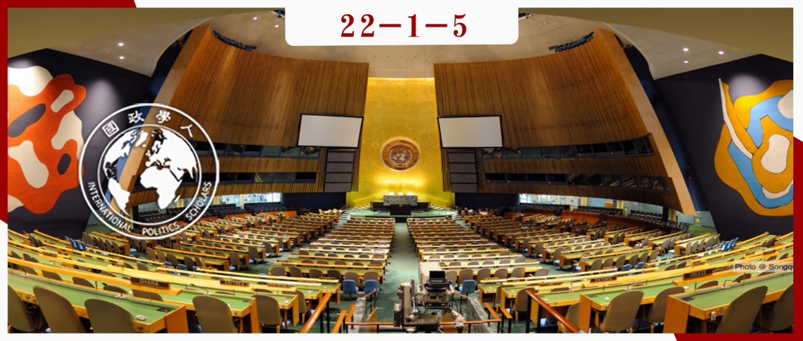

收录于合集 #《国际关系前沿》2022年第1期 23个

作品简介
作者 ： Michaela Mattes是加州大学伯克利分校的政治学副教授。她的研究侧重于安全合作的设计和效果，特别是冲突管理协议和军事联盟；Brett Ashley Leeds 是莱斯大学政治学教授。她的研究重点是国际合作，特别是国际协议的设计和效果；Royce Carroll是埃塞克斯大学比较政治学教授。他的研究重点是民主制度在决策过程中的作用，特别是立法政治、政党和意识形态测量中的定量方法等领域。
编译 ： 王芷汀（国政学人编译员，约翰霍普金斯大学保罗尼采高级国际关系研究院）
来源 ： Michaela Mattes, Brett Ashley Leeds, Royce Carroll, Leadership Turnover and Foreign Policy Change: Societal Interests, Domestic Institutions, and Voting in the United Nations, International Studies Quarterly, Volume 59, Issue 2, June 2015, Pages 280–290.
归档 ： 《国际关系前沿》2022年第1期，总第40期。

内容摘要 ****
本研究考察了国内政治变化对联合国大会（UNGA）投票的影响。我们认为，新领导人依赖不同于其前任的社会团体支持上台时，最有可能改变外交政策。然后我们检验国家制度背景，在多大程度上塑造了这一过程，并尤其关注了民主的作用。我们使用联合国大会投票模式的新衡量标准和领导人支持联盟变化的新数据来检验我们的假设。我们发现领导人的社会支持基础的变化会导致联合国投票的变化。这一现象在非民主国家尤为明显。这项研究证实了这样一种观点，即外交政策，如国内政策，会随着领导人所代表的特定利益而变化。这鼓励学者少关注领导层变革本身，而更多地关注领导者最对其负责的社会群体的变革。这项研究还表明，民主制度不仅在受条约和国际法管辖的领域，而且在短期内更容易改变的外交政策领域激发了政策的一致性。
文章导读
是什么导致外交政策立场发生变化？我们认为，国内政治变化会导致重大的外交政策变化。此外，我们认为国内政治制度的变化并不是与外交政策相关的唯一国内变化。社会团体在这些机构中掌权的变化也会产生重要影响。本文考察了国内领导人支持来源的变化对外交政策的影响。由于领导者希望继续掌权，而且每个领导者都依赖一些国内行为体的支持来维持其领导地位，因此领导者倾向于奉行其核心社会支持团体所青睐的政策。我们认为国内分歧通常对应于不同的外交政策偏好。因此，当一位领导人上台时，与其前任相比，依靠不同的社会团体来获得支持，政策变化（包括外交政策变化）的可能性更大。然而，国内政治制度会调节外交政策的变化程度。由于民主领导人需要更多人口的支持才能继续掌权，并且更受其他行为者的约束，因此与非民主国家相比，民主国家的外交政策应该表现出更高的稳定性。
为了验证我们关于一国外交政策立场发生广泛变化的论点，我们利用了联合国大会（UNGA）的投票模式。联合国大会涉及问题的广泛性揭示了一个国家的国际联盟和外交政策取向的许多方面。我们利用新数据来捕捉一个国家的联合国大会总投票行为随时间的变化，并以一致的规模解释立场。我们制定了区分领导层变动的规则，这些规则保持了国内的领导人支持来源与领导人支持基础变动的国内来源相同。使用这些新数据，我们检查投票模式的变化是否对应于新领导者从与前任领导者不同的社会团体获得支持的时期。
结果表明，影响国内政策制定的相同因素也会影响外交政策制定，国内团体之间的竞争是外交政策立场变化的有力预测因素。我们还发现，与民主国家相比，领导人支持来源的变化导致非民主国家更大的外交政策重定向。
01
外交政策的国内基础
很长一段时间，学者们经常假设国际需要或“国家利益”推动外交政策，而国内竞争可能会影响“低政治”领域，例如贸易政策。但外交政策通常被认为不属于政治竞争和党派、部门、种族或地区利益的范畴。越来越多的学者开始挑战这种观点。不同的经济利益可能会为了控制外交政策而相互竞争。因此，即使在直接影响国家安全的领域，在国内掌权的联盟的变化也会导致外交政策的变化。除此之外，地区、宗教、民族和意识形态的分歧也可能影响一个国家的总体外交政策方向。
尽管国际关系学者越来越接受国内影响对外交政策的重要性，但关于该主题的大量研究大多强调国内政治制度的影响。这些机构定义了一个政权的决策过程和问责结构，随着时间的推移几乎没有变化。它们最好地为外交政策的变化提供了横截面的解释。相比之下，领导人通过这些机构制定的政策反映了他们所负责的群体的短期变化。我们认为，研究国内利益支持领导人的变化，可以让学界更好的理解国家联盟和外交政策立场的变化。尽管存在国际体系的限制和必要性，领导人在其奉行的外交政策中仍保留有意义的选择。领导者所代表的社会群体的利益和国内制度环境会影响这些选择。
02
国内利益、制度和外交政策变化
我们假设，经济、种族、宗教、地区或其他共同的社会特征会导致拥有共同政治利益的个人组成社会群体，并为了政治影响力与其它群体展开竞争。我们进一步假设领导者希望继续掌权，而维持权力需要保留这些社会群体中某些子集的支持。保持权力所需的支持者人数取决于该国的政治机构。然而，必要支持者的数量少于在选择领导者方面有发言权的总人数。因此，即使没有重大的制度变革，依靠不同团体支持的继任者也可能上台。鉴于不同的国内群体在国际问题上可能有不同的偏好，我们预计，当一位迎合不同利益和偏好的领导人上台时，外交政策最有可能发生变化。当领导者依赖与其前任相同的支持来源时，我们应该不太可能看到政策发生变化。
拥有不同社会支持来源的领导人有时更愿意奉行不同的外交政策。然而，国内领导人支持来源的变化是否真的会导致外交政策立场的显著变化，也可能取决于国内制度背景。国家内部有两套重要的政治制度，它们影响着代表不同核心社会利益的新领导人可能改变外交政策的程度：影响领导人选择规则的政治制度和影响决策规则的政治制度。为获胜的联盟提供公共产品的需要以及吸引中间选民的动机应该会导致民主领导人的政策在一定程度上保持一致。另一方面，在只需要少数支持者就可以继续掌权的体制中运作的领导人最受益于向他们获胜的联盟提供私人产品。与民主国家相比，当这些领导人依靠少数人的支持留任时，我们应该看到不同支持联盟的领导人的政策之间的平均变化更大。
03
国内政治变化和联合国大会投票
联合国大会投票是一个可能能够见证和衡量各国总体外交政策方向变化的舞台。这是所有国家都有机会就国际社会面临的问题发表意见的唯一的论坛。该大会涵盖了广泛的国际问题，例如南北差距、裁军和人权。然而，许多问题并没有直接映射到国内分歧。在这些问题上，大部分国内民众可能对联大正在审议的具体主题漠不关心。因此，我们不认为联大投票直接反映了国内团体在特定投票方面的利益。相反，我们认为联合国大会投票模式间接反映了一个国家的外交政策立场，该立场与国内团体对与特定国家结盟或远离特定国家的广泛偏好相对应。总的来说，一个国家在联大的投票记录是其外交政策方向和国际联盟的潜在指标：它记录了一个国家希望如何被他人看待，它认为可接受的国际规范，以及它愿意在各种问题上公开采取的立场。
出于三个原因，联合国大会投票能很好的反映一个国家受国内因素驱动的外交政策立场变化。第一，与条约合作不同的是，国际法不规范联合国的投票，各国可以根据自己的意愿随时和尽可能多地自由修改其立场。第二，大多数联合国大会决议的非约束性使得一个国家的整体行为更有可能反映对重要国内选民意见的反应，而不是国际战略考虑。此外，“出售”选票的意愿也是外交政策的一种表现，因此即使发生这种转移，也不会削弱我们的主张，即联合国大会选票的汇总是一个国家选择的政策立场的代表。第三，与许多其他外交政策行为不同，联合国投票并不严格涉及国家之间的相互依赖。因此，联合国投票模式更容易因一国国内政治变化而发生变化。
我们认为，国家政策源于国内利益与机构之间的相互作用。因此，我们的研究着手将国内政治进程的这两个组成部分联系起来，并检查它们对联大投票的影响，使用比以往研究更大的样本以及国内偏好变化的新衡量标准。我们还使用了一种不依赖于两个国家投票记录之间的比较的联合国大会投票的衡量标准，从而使我们能够在两个国家分开时弄清楚哪一方正在改变政策，这对于评估我们关于国内政治变化对单个国家行为的影响的假设至关重要。
在接下来的部分中，我们将描述我们的研究设计并检验以下假设：
假设 1：相比较于没有领导层变动的年份或不伴随国内领导人支持来源的变化的领导层变动，领导层变动与国家联大投票模式的变化在有国内领导人支持来源的变化的时候更有关。
假设 2：与非民主国家相比，民主国家在联大投票模式中表现出更多的一致性。
假设 3：国内领导人支持来源的变化对联大投票模式变化的影响在非民主国家比在民主国家更大。
04
研究设计
为了检验我们的假设，我们利用了1946年至2008年间联合国大会上各国的年度投票记录。使用国家年作为分析单位使我们能够对比具有不同社会支持来源的新领导人出现的年份。领导层发生变化但新领导者代表与其前任相同的社会阶层的年份，以及没有领导层过渡的年份。我们预计，平均而言，在具有不同支持联盟的新领导人就职的年份中，最有可能观察到联大投票的变化。
我们在下面使用的所有模型中都采用了国家级固定效应。这种方法使我们能够充分考虑与特定国家相关的任何未测量因素，并隔离我们的自变量对每个国家组内变化的影响。因此，我们不是在检查横截面的变化，而是每个国家在不同年份的联大投票变化程度。
05
使用联合国大会投票衡量外交政策立场的变化
我们认为，投票模式反映了一个国家外交政策方向和国际联盟的潜在趋势。投票所涉及的不同主题背后是国际合作和冲突的一个潜在维度，它反映了国家（无论大小）更广泛的外交政策立场。研究还必须满足三个额外的要求。首先，我们的衡量标准必须捕捉外交政策的短期变化，这些变化可能因领导层的任何变化而异。其次，它必须建立跨时期的连续性，以便联合国大会做出的选择在每届会议之间具有可比性，而不是受制于该机构不同的议程。最后，我们的措施应该检测每个国家的变化，而不依赖于与任何一个国家的相对相似性。
06
衡量国内领导人支持和制度类型来源的变化
为了评估国内利益变化对联大投票的影响，我们需要确定领导人上台时与前任具有不同的领导人支持来源（SOLS）的情况。在我们对SOLS变化的编码中，我们仅依赖于国内领导人的支持基础，并独立于政策结果对SOLS变化进行编码。我们还尽可能将国内领导人支持来源的变化与国内政治制度的变化区分开来。
我们对SOLS更改的编码规则因国家/地区的制度类型而异。在民主国家，我们将领导人的SOLS概念化为那些投票支持或与领导人所在政党有关联的人。我们遵循的基本规则是，每当具有不同党派关系的领导人上台时，就构成SOLS变更。例如，我们在一党制国家没有对SOLS变化进行编码。这是因为随着时间的推移，党内精英可能会分享基本的政策偏好。此外，在个人主义系统中，由于领导者的支持小组由忠于该特定领导的家人和朋友组成，因此领导的变化通常伴随着领导支持来源的变化。
07
控制变量
我们将控制变量限制在有可能影响联大投票和SOLS变化的因素。第一，我们控制了整个时期内与美国、苏联的联盟关系（直到1991年苏联解体），其中包括该国在特定年份是否与任一超级大国签订国防协议的虚拟变量。第二，我们控制了冷战结束的短期影响。第三，我们控制了政权过渡。
08
实证结果
我们从一个简单的模型开始我们的分析，该模型包括我们感兴趣的主要理论变量：SOLS变化、其他领导者过渡和民主（模型1）。在第二个模型（模型2）中，我们接着引入了控制变量：政权过渡、冷战结束、美国盟友和苏联盟友。
模型1和2都表明SOLS变化对联合国大会投票变化的统计上显着的积极影响。与假设1一致，与前任不同的社会支持基础的新领导人就职的年份比同一领导人继续掌权的年份经历了更多的联合国大会投票变化。另一方面，与领导者没有变化的年份相比，由具有相同国内支持团体的新领导人掌权的领导人更替似乎与联大投票的变化没有更大的关联。虽然是正数，但其他领导者转换的系数在统计上并不显着。虽然SOLS的变化与联大投票变化的相关性比其他领导人更替更一致，但在所有案例的样本中，它们的影响不一定更大。关于假设2，我们发现，正如预期的那样，民主制度对一国的外交政策具有约束作用。民主的系数是负的并且在统计上是显着的，这表明与非民主国家相比，联合国大会持续民主国家投票模式的逐年变化要小得多。模型1和模型2的比较表明，包含控制变量不会影响我们对假设1和假设2的结论。
为了确定民主国家和非民主国家之间SOLS变化和其他领导者换届的影响有何不同，我们估计了SOLS变化和其他领导者换届与民主相互作用的模型。模型3仅包含感兴趣的理论变量，模型4引入了控制变量。在这两种模型中，SOLS的系数都发生了变化。民主是消极的并且在统计上是显着的，这表明SOLS变化的影响在非民主国家比在民主国家更大。
虽然我们发现SOLS变化对民主国家和非民主国家的影响存在明显差异，但没有迹象表明其他领导人更替的影响在两种政权类型之间存在差异。当具有不同SOLS的新领导人上台时，与具有相同SOLS的领导人上台或没有领导人更换时相比，非民主国家在联大投票模式上经历了显着更大的变化。另一方面，在民主国家，SOLS变化的影响与其他领导人换届的影响没有什么不同，而后者又与没有领导人换届的年份没有什么不同。总的来说，我们可以得出结论，我们的发现为假设3提供了支持。
09
总结
本文的基本前提是，如果我们想了解外交政策的变化，就需要考虑国内的政治进程。在我们的研究中，我们试图解释各国联大投票模式的变化，这是一种常用的外交政策偏好衡量标准。我们发现这些SOLS变化始终是非民主国家外交政策变化的重要预测指标，但在民主国家则不然。我们还发现，在非民主国家，SOLS变化对联大投票的影响大于其他领导人换届的影响。最后，我们观察到民主国家联大投票的一致性比非民主国家更高，无论是在没有领导人换届的年份还是在SOLS更换年份。我们的研究结果证实了这样一种观点，即外国政策制定与国内政策制定过程交织在一起，在这一过程中，各集团相互竞争以在既定的制度规则内推进他们的利益并实施他们偏爱的政策。因此，希望预测外交政策变化的政策制定者应该密切关注国内政治竞争和领导人选择的动态。
我们的研究还重新审视了国内政治制度的约束作用。我们在不受国际法约束的外交政策领域衡量不同政权类型的外交政策一致性。在该领域新领导人比其他地方拥有更多改变立场的余地。这意味着我们在民主国家的联合国大会投票模式中发现的更大稳定性在很大程度上源于其国内机构，而不是由国际承诺引起的。
未来应继续研究领导人支持来源的变化对外交政策一致性和其他国际关系领域变化的影响。研究不同国际法施加的限制程度对外交政策领域的影响将特别有趣。这将使学者以及最终的政策制定者能够更全面地了解何时最有可能发生国内动机的外交政策变化，以及国内和/或国际机构在国际政治的不同领域限制国家行为的程度。
译者评述
本文作者采用定量研究方法论述了国家领导层更替与外交政策变化之间的关系，并通过联合国大会投票模式的变化进行衡量。在历史上，对于可能影响各国外交政策的因素，学界通常忽略了国内因素的影响，然而本文作者提出，国内的政治竞争和领导层更替也会对外交政策的变化产生影响。作者通过分析国内利益团体、政治制度对各国在联合国大会投票的影响，认为领导人社会支持基础的变化会导致联合国投票的变化，而民主的政治制度或将限制这一变化以保持政策的一致性。
通过以联合国大会投票为因变量的研究设计，本文创新性地强调了国内政治因素以及政治制度对于外交政策的影响和约束作用，这将是未来研究外交政策的一个重要方向。以美国对非外交政策为例，Olsen（2017）同样提到了当前福音派基督教游说团体对非洲政策制定的影响越来越大，如果仅仅考虑国家安全与国家利益的影响，对于外交政策的分析将是不连贯且模糊的。
最后，我们也应当考虑到，由于领导人社会支持基础必然是庞大且复杂的，所涉及到的社会团体并不一定单一。这意味着在政治决策过程中，领导人依然将受到不同行为者的影响。除此之外，领导层更替与外交政策变化也应当在不同的时间段或所涉及的政策类型进行分析。例如在选举和非选举阶段以及核心政策或非核心政策上，领导层对于其社会支持依赖度的不同和社会团体对于领导人不同的影响程度可能导致其外交政策方向的不同。
参考文献
Gorm Rye Olsen (2017) The ambiguity of US foreign policy towards Africa, Third World Quarterly, 38:9, 2097-2112.
DOI: 10.1080/01436597.2017.1315298
词汇整理
低政治 low politics
联合国大会
United Nations General Assembly (UNGA)
政权过渡 regime transition
审校 | 郑敖天 卫艺璇
排版 | 刘吉文 黄伊蕾
文章观点不代表本平台观点，本平台评译分享的文章均出于专业学习之用, 不以任何盈利为目的，内容主要呈现对原文的介绍，原文内容请通过各高校购买的数据库自行下载。

国政学人
支持学术公益与知识传播
微信扫一扫赞赏作者 __赞赏
已喜欢，对作者说句悄悄话
取消 __
发送给作者
发送
最多40字，当前共字
上一页 1/3 下一页
长按二维码向我转账
支持学术公益与知识传播
受苹果公司新规定影响，微信 iOS 版的赞赏功能被关闭，可通过二维码转账支持公众号。